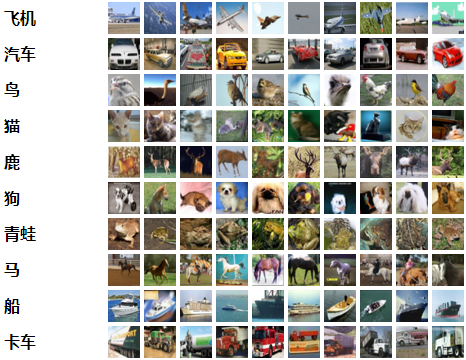

基于PyTorch的CIFAR10小记
CIFAR-10数据集介绍
CIFAR-10数据集由10个类的60000个32x32彩色图像组成，每个类有6000个图像。有50000个训练图像和10000个测试图像。
数据集分为五个训练批次和一个测试批次，每个批次有10000个图像。测试批次包含来自每个类别的恰好1000个随机选择的图像。训练批次以随机顺序包含剩余图像，但一些训练批次可能包含来自一个类别的图像比另一个更多。总体来说，五个训练集之和包含来自每个类的正好5000张图像。
以下是数据集中的类，以及来自每个类的10个随机图像：

下载地址：http://www.cs.toronto.edu/~kriz/cifar-10-python.tar.gz
切入正题
这次实践主要参考PyTorch官方的教程https://pytorch.org/tutorials/beginner/blitz/cifar10_tutorial.html#sphx-glr-beginner-blitz-cifar10-tutorial-py，在此基础上进行一些修改，由于主要目的是了解PyTorch的编程方法，所以在数据集那里并没有从训练集中切分验证集出来，在训练时仅观察了loss的变化，最后使用测试集观察准确率。
关于数据集
CIFAR10的数据集可以通过torchvision进行下载，但是下载速度太慢，建议使用迅雷下载
开搞
导入基础包
1 | import torch |
创建数据集
1 | # 创建一个转换器，将torchvision数据集的输出范围[0,1]转换为归一化范围的张量[-1,1]。 |
创建数据加载器
1 | # 创建训练/测试加载器， |
创建网络
我这里定义了两个CNN网络，分别保存在CNN_1.py和CNN_2.py文件中
CNN_1
1 | # CNN_1.py |
网络结构如下：
1 | Net( |
网络创建了3个卷积层，1个全连接层
CNN_2
1 | import torch |
打印网络如下：
1 | Net( |
创建了5个卷积层，最后使用GAP连接输出层
定义训练函数和测试函数
为了方便对不同的网络进行训练和测试，因此，定义一个通用的训练函数和测试函数，方便使用
定义训练函数
1 |
|
定义测试函数
1 |
|
在测试集上运行网络
测试CNN_1网络
1 | train(CNN_1.net, CNN_1.criterion, CNN_1.optimizer, trainloader, epochs=EPOCHS) |
测试CNN_2网络
1 | train(CNN_2.net, CNN_2.criterion, CNN_2.optimizer, trainloader, epochs=EPOCHS) |
训练结果
CNN_1在10代训练后，在测试集准确率上能够达到71.1100 %
CNN_2在10代训练后，在测试集准确率上能够达到75.6700 %
代码
链接：https://pan.baidu.com/s/1rOmiE35rQnszmYyyN6h16Q
提取码：zqf2
复制这段内容后打开百度网盘手机App，操作更方便哦